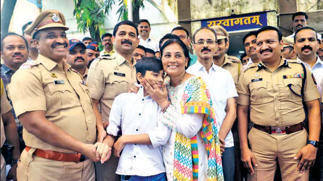
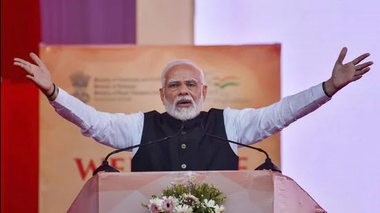
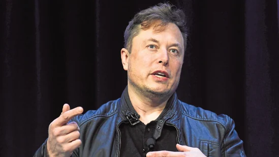
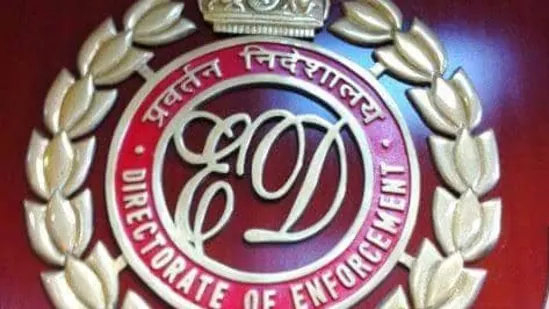
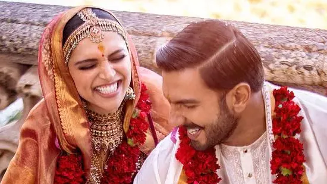
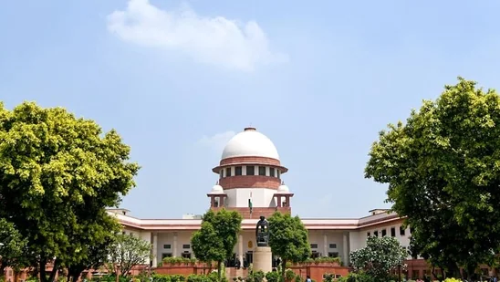
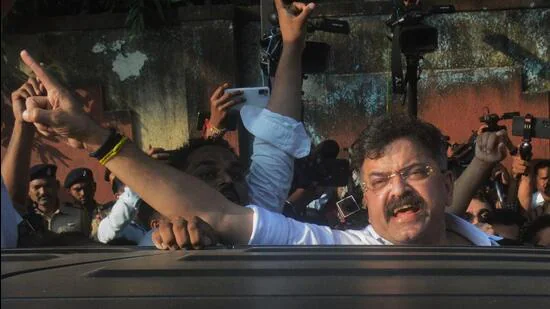
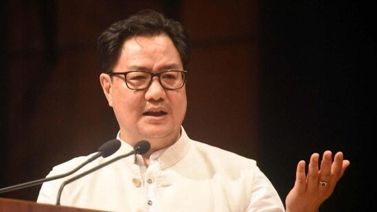

Akshay Kumar addressed what Bollywood can do to bring back audiences to the theatres and spoke about reducing the cost of movie outing, including actors' fees and production costs.

By HT Entertainment Desk Akshay Kumar has become one of the first Bollywood stars to address the high cost of movie outings in India currently. Speaking recently at the Hindustan Times Leadrship Summit, the actor admitted that the film industry needs to ‘dismantle’ the existing system and ‘start all over again’ if it wants to win the audience back. He emphasised on the need to lower the cost of movie outings and said he would want to lower his fees for that as well. Also read: Akshay Kumar says his films are not working because of Kapil Sharma
Meenakshi Sheshadri, Chiranjeevi, Madhoo, Venkatesh, Ramya Krishnan and many other celebs got together for the annual 80s stars reunion, which was held in Mumbai this year. It was hosted by Poonam Dhillon and Jackie Shroff at the latter’s home in Mumbai. See all the photos.

Chiranjeevi, Venkatesh, Khushboo, Shobana, Revathy, Meenakshi Sheshadri, Tina Ambani and Madhoo attended a bash at Jackie Shroff’s Mumbai house recently. They were also joined by Anupam Kher, Vidya Balan, Raj Babbar and Anil Kapoor, among others. The party was hosted by Jackie and Poonam Dhillon, and marked the annual '80s actors' reunion. Also read: Inside Chiranjeevi's 67th birthday with wife, Ram Charan and Upasana
The ICC is keeping the option of a reserve day open but has tried to make sure that the T20 World Cup 2022 final gets over on Sunday itself.

Bollywood actor Riteish Deshmukh shared a photo of Bharat Jodo Yatra where a yatri held high a photo of his father, former Maharashtra chief minister Vilasrao Deshmukh.

Bollywood actor Riteish Deshmukh, son of former Maharashtra chief minister Vilasrao Deshmukh, shared a photo from Rahul Gandhi's Bharat Jodo Yatra where a towering photo of his father was held by a follower high above the crowd of yatris. Actor and Riteish's wife Genelia too shared the photo. Several social media users asked Riteish why he has not joined the yatra.
From March 31, 2023, if you hail a kaali peeli its roof light can tell you if it is vacant, hired, or the driver wants to take a break. The Mumbai Metropolitan Region Transport Authority (MMRTA) has made it mandatory for all taxis in the city to install the colour-coded indicator before the deadline

Mumbai, India - 2 Sept. 2015 : The black and yellow taxi observes strike against uber and ola cabs, The strike continues for the second day. All the taxi drivers line up at CST international airport, Andheri, in Mumbai, India, on Wednesday, September 2, 2015. (Photo by Pramod Thakur/ Hindustan Times) (Hindustan Times)
Mumbai: From March 31, 2023, if you hail a kaali peeli its roof light can tell you if it is vacant, hired, or the driver wants to take a break. The Mumbai Metropolitan Region Transport Authority (MMRTA) has made it mandatory for all taxis in the city to install the colour-coded indicator before the deadline.
Former UK prime minister Boris Johnson, actor-filmmaker George Clooney, and Sachin Tendulkar, among other big names, talk about politics, India's economy, sports, entertainment etc.,

The final day of the five-day-long Hindustan Times Leadership Summit 2020 is being held today, November 12. The agenda of this year's summit is ‘Envisioning a New Tomorrow. All the sessions of Day 5 are being held at the Taj Palace, New Delhi.(HT Photo/Sanchit Khanna)
G20 Summit: US President Joe Biden and British Prime Minister Rishi Sunak will be among world leaders attending the summit.

Prime Minister Narendra Modi is set to attend the G20 Summit in Indonesia’s Bali. This comes just weeks before India assumes the G20 presidency from December 1. The bloc is said to represent more than 80 per cent of the world’s GDP and over 75 per cent of the global trade. Apart from taking over the presidency, PM Modi is also expected to be holding meetings with world leaders on the sidelines of the summit. “During the Bali Summit, I will have extensive discussions with other G20 Leaders on key issues of global concern, such as reviving global growth, food and energy security, environment, health, and digital transformation. On the sidelines of the G20 Summit, I will meet with Leaders of several other participating countries, and review the progress in India’s bilateral relations with them,” the Prime Minister said in his departure statement.
1) “In a significant moment for our country and citizens, President of Indonesia Joko Widodo will hand over the G20 Presidency to India at the closing ceremony of the Bali Summit. India will officially assume the G20 Presidency from December 1,” PM Modi said on Monday. “I will also extend my personal invitation to G20 Members and other invitees to our G20 Summit next year," he added.
While the dates of the 17th India-China senior military commanders meeting is still be to be finalized, there is positive outcome expectation on resolution of remaining two military friction points as political pressure after conclusion of the 20th Party Congress of Communist Party of China (CPC) may have eased as President Xi has got the third term.

External Affairs Minister S Jaishankar at the HT Leadership Summit last Thursday made it amply clear that Beijing had to commit to past border agreements and refrain from unilateral military action along the 3488 km long LAC to restore normalcy in otherwise soured bilateral relations.
Talking about her Hollywood plans, Sonam Kapoor had once said in an old interview that she doesn't want to follow in Priyanka Chopra or Deepika Padukone's steps to make a career in Hollywood.

Manpada police immediately formed 20 teams to search the boy. At least 300 policemen from Kalyan Dombivli, Nashik and Gujarat were involved in search and investigation and managed to rescue the boy safely
The prime minister will join world leaders such as US President Joe Biden, Chinese President Xi Jinping, UK Prime Minister Rishi Sunak and French President Emmanuel Macron at the annual summit
India will highlight its “unwavering commitment” to collectively tackling global challenges at the G20 Summit and its leadership of the grouping in 2023 will emphasise equitable growth and a shared future for all, Prime Minister Narendra Modi said on Monday.
In a departure statement ahead of his visit to Bali, Indonesia, for the G20 Summit, Modi said he will have extensive discussions with other G20 leaders on key issues of global concern, including reviving global growth, food and energy security, the environment, health and digital transformation.
Twitter also cut close to 3,700 people this month via email as a way to trim costs following Musk’s acquisition. “Regarding Twitter’s reduction in force, unfortunately there is no choice when the company is losing over $4M/day,” Musk tweeted on Nov 5 addressing the lay-offs.
Just days after it was reported that Elon Musk has ended Twitter’s work-from-home policy, the new boss of the social networking platform cleared the air around the remote working policies on Sunday. Replying to a report tweeted by an unverified account that said, ‘the billionaire businessman has ordered his Ireland workforce back to Dublin by November 14,’ Elon Musk wrote: “This is false. Anyone who can be in office, should be. However, if not logistically possible or they have essential personal matters, then staying home is fine.” Musk said that Twitter employees will follow the same policy as Tesla and SpaceX.
Delhi excise policy: Both ED and CBI have been investigating the case.
The Enforcement Directorate has taken custody of the Aam Aadmi Party’s communication in-charge - Vijay Nair - in the liquor policy case, reports said. Nair was earlier arrested by the CBI amid investigation over the alleged irregularities in the excise policy case. The probe has been intensifying and, along with it, the political sparring over the matter.
The CBI and the ED started investigating the liquor policy case - in which Delhi Deputy Chief Minister Manish Sisodia is also an accused - following recommendation by Lieutenant Governor Vinai Kumar Saxena in July. Ever since, the AAP and the BJP - ruling at the Centre - have been locked in an intense standoff.
Deepika Padukone and Ranveer Singh anniversary: The actors married in 2018 in a private ceremony at Lake Como, Italy. Soon after their wedding, Ranveer spoke about Deepika in an interview and shared her ‘biggest influence’ on him.
Deepika Padukone and Ranveer Singh anniversary: The actors married in 2018 in a private ceremony at Lake Como, Italy. Soon after their wedding, Ranveer spoke about Deepika in an interview and shared her ‘biggest influence’ on him.
The two tied the knot in 2018 in a private ceremony at the scenic Lake Como, Italy. Following a traditional Konkani ceremony on November 14, the actors celebrated their union with an Anand Karaj ceremony on November 15. In an old interview, Ranveer had called himself the ‘husband of the millennium’, and said that Deepika Padukone's happiness was his happiness. Ranveer also said that he ‘could have gotten carried away’ with his name and fame, but Deepika had ‘anchored’ him.
Places of Worship Act: The Supreme Court will now hear the matter in January.
A video purportedly showed Awhad pushing aside the woman to go closer to chief minister Eknath Shinde’s car ahead of the inauguration of a bridge
Opposition Nationalist Congress Party (NCP) lawmaker Jitendra Awhad was booked under the Indian Penal Code’s Section 354 (assault or use of criminal force intending to outrage modesty) for allegedly pushing a woman in a crowd on Sunday near Mumbra in Maharashtra’s Thane.
A case was on the complaint of the woman, who is a social worker from Mumbra. She alleged Awhad pushed her by touching her shoulders inappropriately. She claimed Awhad asked her why was she standing in the middle and to get out. She alleged he pushed her to the other side. The woman met Shinde before registering the case.
Union law minister Kiren Rijiju while listing his ‘Nehruvian blunders of Kashmir’ said the erstwhile Kashmir ruler Maharaja Hari Singh wanted to accede to India in July 1947, but Jawahar Lal Nehru delayed it to ‘fulfill his personal agenda’.
An all out Kashmir history war has erupted between Union law minister Kiren Rijiju and Congress leader Jairam Ramesh on the birth anniversary of India's first prime minister Pandit Jawahar Lal Nehru. In an article for news website CNN News 18, Rijiju had listed what he called ‘Five Nehruvian Blunders of Kashmir’. His article evoked sharp criticism from Congress leaders including Jairam Ramesh, who called him a ‘Distorian'.
The article had evoked stern reactions from the Congress leaders including Karan Singh, who happens to be the Maharaja's son. In an opinion column on Hindustan Times, the Congress leader clarified his father's role in the events which unfolded leading to the accession of J&K into India.